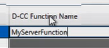
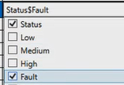
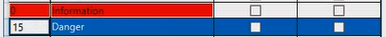
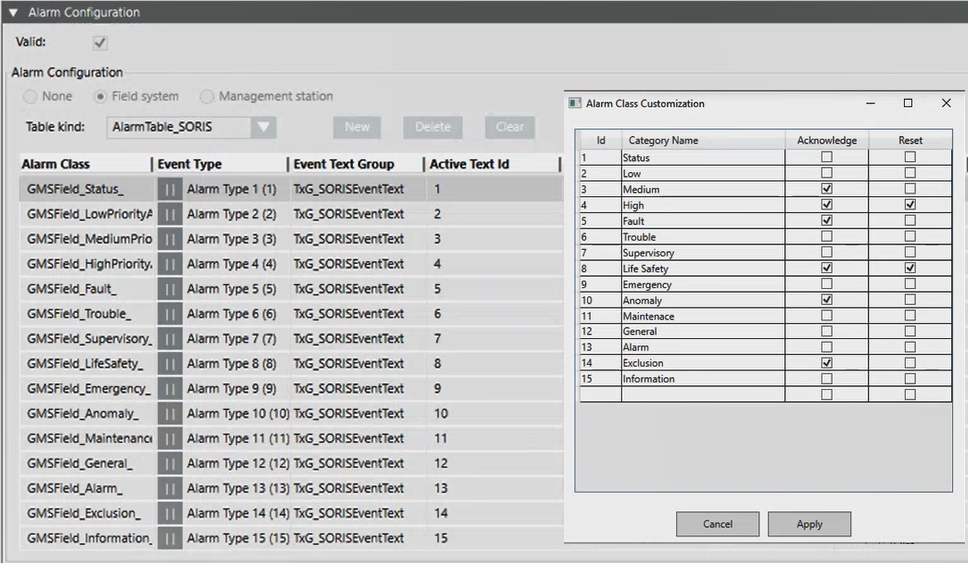
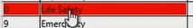

For the specific customized OPC UA object models with multiple OPC tag mappings to one point, you can customize the function name or the alarm configuration.
Prerequisites
You are setting the OPC UA configuration, and the SORIS OPC UA Configurator page displays on the screen.
In the SORIS OPC UA Configurator page, select Advanced > Configuration.
In the Advanced Points Configuration dialog box that displays. The first column graphically indicates the OPC UA points listed in the OPC UA Point column.
In the Advanced Points Configuration dialog box, select the item in the OPC UA Point column that corresponds to the configuration you want to set, and do one or more of the following: NOTE: Fields in gray cannot be set. In particular, functions cannot be set for properties () because properties cannot have functions in Desigo CC. Also, aggregators () cannot have alarm settings because they have no value in Desigo CC. To have alarms on aggregators, you must configure alarms on properties.
To set a Desigo CC function for a point (), click the corresponding field in the D-CC Function Name column, and enter the exact function name as existing in Desigo CC.

If the point value can have alarms, the alarm class and alarm value can be customized as follows: a. Click the corresponding field in the Alarm Class column, and from the drop-down list, select one or multiple categories for which events will be generated.

NOTE: To modify the alarm classes, see Customize Alarm Classes, below. b. Click the corresponding field in the Alarm Value column, and enter the appropriate values that will generate events for the specified event categories.
NOTE: You can configure numeric values or Boolean integers (0 or 1). Use the dollar sign ($) as value separator. Use the ampersand sign (&) as connective AND for the multiple values that will trigger events for the specified alarm classes. Each alarm value you set corresponds exactly to an alarm class in the order in which the selected alarm classes appear in the Alarm Class column.
(Optional) To save the current advanced settings to a CSV file for later reuse, do the following: a. In the Advanced Points Configuration dialog box, click Export CSV. b. In the Save As dialog box, enter the file name, and click Save. c. Click OK. NOTE: Saving the current advanced settings to a CSV file can facilitate later adjustments to this configuration. You may want to do the following: - Open the CSV file with Excel, adjust the settings, and save the changes. - In the Advanced Points Configuration dialog box, click Import CSV. - In the Open dialog box, select the updated CSV file, and click Open. Then click OK. In this way, the updated settings are loaded from the CSV file into the configurator.
To save the changes in the configurator, click Apply. NOTE: Click to cancel the operation.
The Advanced Points Configuration dialog box closes.
In Advanced Points Configuration dialog box, next to the Alarm Class column header, click edit.
In the Alarm Class Customization dialog box, do one or more of the following:
Modify the existing settings. NOTE: The alarm class customization settings must match exactly the configuration of the customized alarm table in Desigo CC. If you enter an Id value which is the same as another one, the new one is taken and the existing one is removed (that is, the existing Id value is automatically replaced by 0).

Add a new alarm class (enter a new Id and Category Name), and set the commands (Acknowledge or Reset). NOTE: The Id value must match the Active Text Id value in the alarm table configuration. In general, the new settings must match exactly the configuration of the customized alarm table in Desigo CC.

Remove an alarm class, replace the Id value with 0.

NOTE: The row is highlighted in red. Once you apply the changes, the next time you open the Alarm Class Customization dialog box, the removed alarm class will no longer be available.
To save the changes in the configurator, click Apply. NOTE: Click to cancel the operation.
To save the current settings to a file, do the following:
In the OPC UA Settings section, click Save Configuration.
The Save as dialog box opens to the destination folder: \\SORIS OPC UA Adapter\Configurations.
Do one of the following:
To save the setting in a new JSON file, enter a new file name.
To save the setting in an existing JSON file, select it.
Click Save.
Click OK.
If you saved the settings to a new file, a new JSON file is created in the destination folder. If you saved the settings to an existing file, this JSON file is overwritten. This configuration will be then discovered in Desigo CC through the OPC UA adapter. NOTE: A JSON file is created or updated for each configured OPC UA server. When working with multiple OPC UA servers, configure and then save each configuration to the specific JSON files. Furthermore, each time a JSON file is saved, the AlarmTable.conf file is re-created and includes the latest alarm configuration (points advanced configuration).
Once you save the configuration, you can import the updated OPC UA configuration from file as follows:
Close and restart the SORIS OPC UA Configurator tool.
In the OPC UA Settings section, click Import Configuration.
In the Open dialog box, select the JSON file that corresponds to the OPC UA server whose configuration you want to update.
Click Open.
Click OK.
The latest alarm settings (points advanced configuration) are retrieved from the AlarmTable.conf file and loaded in the configurator, including the OPC UA configuration (point settings) retrieved from the selected JSON file.